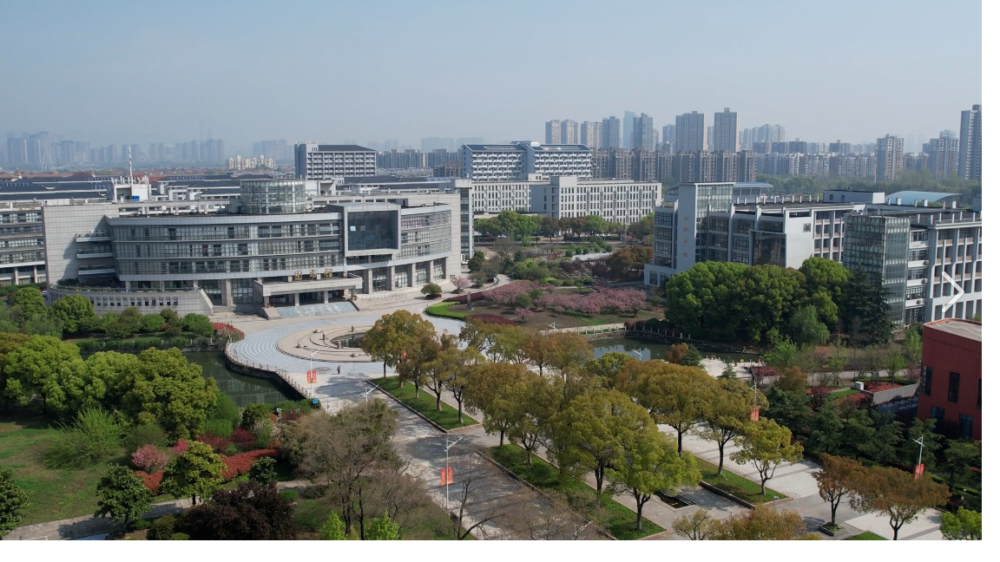
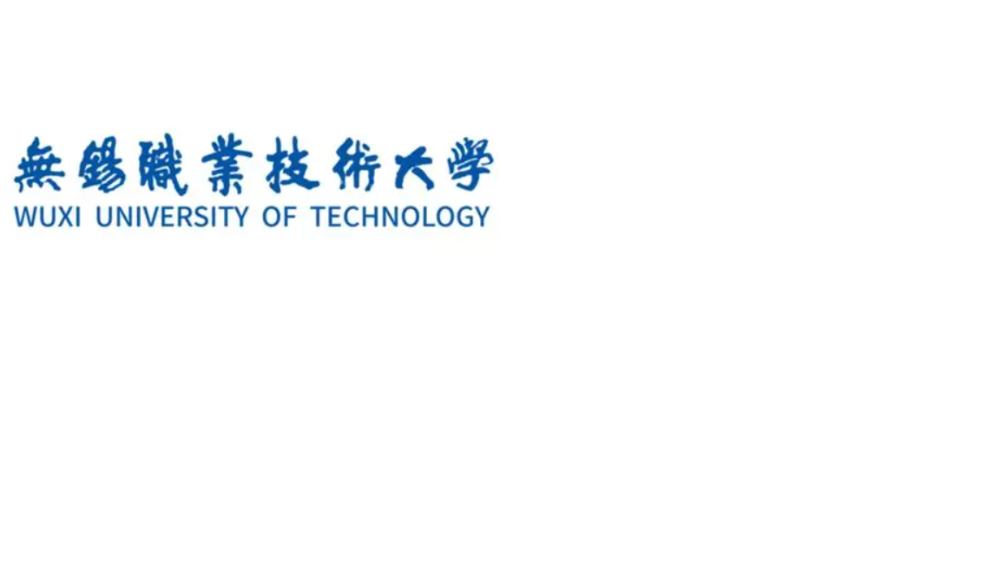

这是无锡职业技术大学太湖校区的航拍画面。画面左侧宏伟建筑就是学校图书馆， 坐落于校园中轴线，前方是环形广场与校内景观湖，湖畔绿树繁花相映，步道环绕其间； 右侧是实训与教学楼宇，远处成片宿舍楼林立，背景是无锡城市高楼。校园布局开阔， 现代建筑与自然绿化相融，环境清新雅致，作为全国知名的本科层次职业院校， 这里兼具优美的校园风光与完善的教学实训条件，是学子求学成长的地方。

无锡职业技术大学（WUXI UNIVERSITY OF TECHNOLOGY），坐落于江苏无锡， 是省属公办全日制本科层次职业院校。学校始于 1959 年创办的无锡农业机械制造学校， 2025 年正式升格为职业本科大学，曾是国家示范性高职，办学底蕴深厚。 学校聚焦智能制造、软件工程、物联网等现代产业方向，坚持产教融合， 着力培养兼具理论功底与实操能力的高素质技术技能人才，是国内职业教育领域的标杆院校

这是《原神》的官方宣传图，图中是旅行者双子：左侧哥哥空，右侧妹妹荧。 《原神》是米哈游（miHoYo）开发的开放世界冒险 RPG， 游戏舞台叫提瓦特大陆，这里存在风、岩、雷、草、水、火、冰七种元素 ，分布七个国度，每个国家由一位神明统治

双子兄妹本来正要离开提瓦特世界，去往下一个星球。天理维系者突然现身，拦住他们， 宣称 “人之子，不可离去”兄妹二人被迫迎战，战斗之后，其中一人被封印捕获， 另一人坠入提瓦特大陆，醒来后失去大部分记忆，开启寻找亲人的冒险，也就是游戏主线的开端。